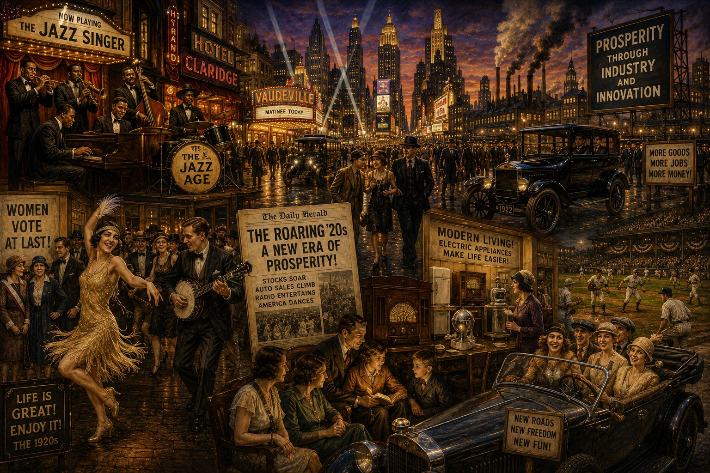
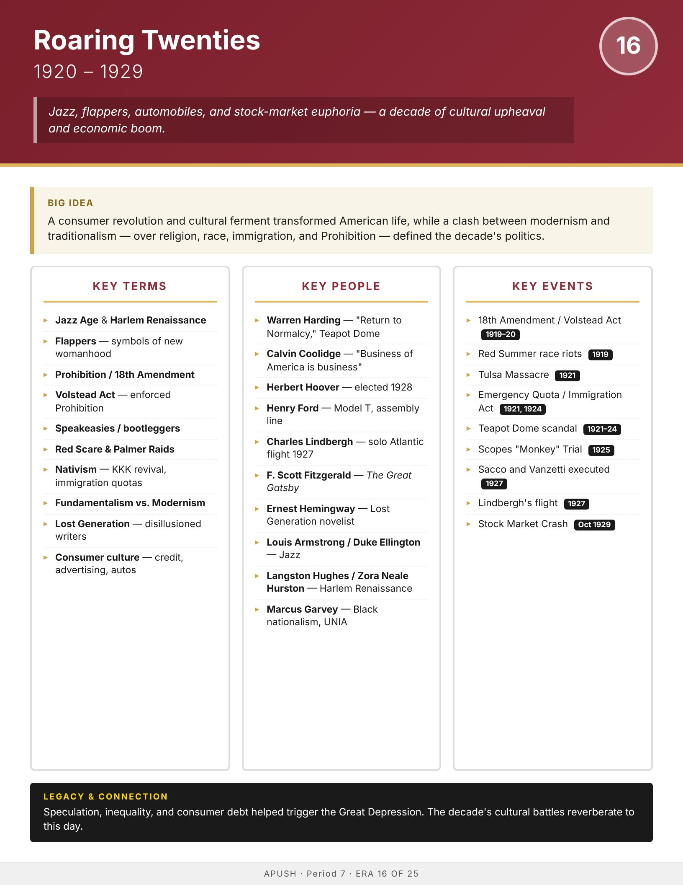

Era
Wise
AP History
AP United States History
Home
Course Sequence
Eras
Exam Prep
← Course Sequence

Era 16 of 25 · AP Period 7 · Lessons 37–38
Roaring Twenties
1920–1929
Open infographic full size
Print

← ERA 15
World War I
ALL ERAS
Eras index
ERA 17 →
Great Depression & New Deal